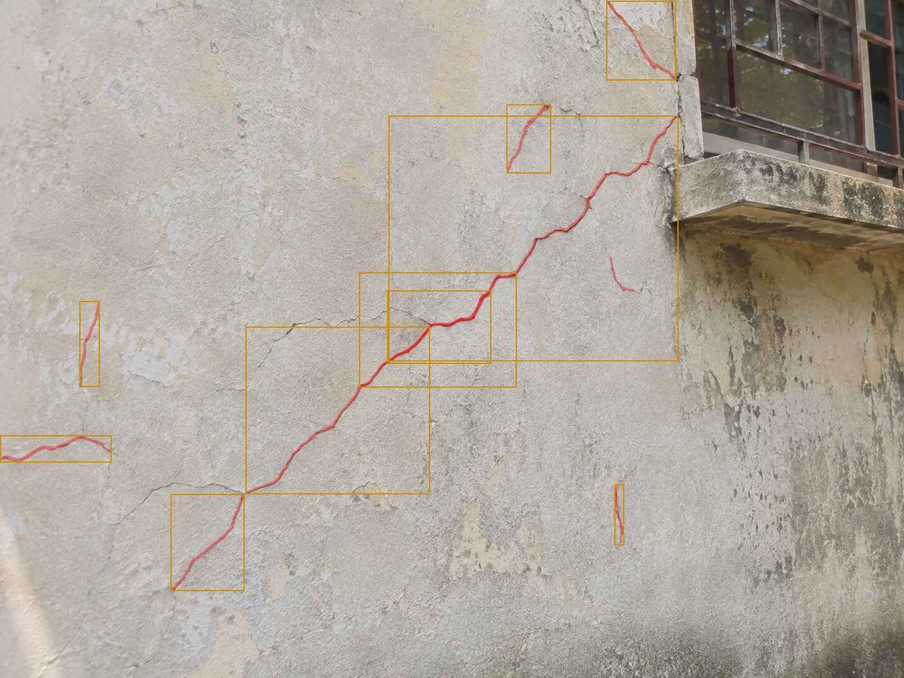

Neev inspection screening - h2.png
Visual screening only - not a structural safety
assessment. Findings are model outputs over cached photos. Absence of a
finding is not proof of absence of a defect. Generated 2026-11-04 12:00 UTC.
Summary
Images inspected: 1 · Findings: 10
Findings by category
| Category | Count |
|---|
| prompt:crack | 10 |
Needs closer inspection
None.
Recommended next steps
- Open each flagged finding and compare the overlay with the original photo.
- Re-photograph flagged regions closer and sharper where image quality warned.
- Escalate confirmed damage to a qualified inspector; this tool cannot certify safety.
original.png 1448x1086, 10 findings

Boxes: red = needs closer inspection, amber = review, blue = informational. Red tint = decoded model masks; masks covering over half the image draw as outlines only to keep detail visible.Original (source of truth): runs\inspections\e254a194d2b7\original.png
crack#0 · category: unknown (unmapped prompt) · priority:
reviewLocation: 575,436-827,620px · Area: 46368px (2.95% of image)
Confidence: not provided by model · Mask: decoded · Run: d93a37fef414
Why: unmapped prompt: category unknown, kept for review
Next: Confirm what the marked region shows; map the prompt if recurring.

crack#1 · category: unknown (unmapped prompt) · priority:
reviewLocation: 127,482-159,619px · Area: 4384px (0.28% of image)
Confidence: not provided by model · Mask: decoded · Run: d93a37fef414
Why: unmapped prompt: category unknown, kept for review
Next: Confirm what the marked region shows; map the prompt if recurring.

crack#2 · category: unknown (unmapped prompt) · priority:
reviewLocation: 811,167-882,277px · Area: 7810px (0.50% of image)
Confidence: not provided by model · Mask: decoded · Run: a70410dd08d4
Why: unmapped prompt: category unknown, kept for review
Next: Confirm what the marked region shows; map the prompt if recurring.

crack#3 · category: unknown (unmapped prompt) · priority:
reviewLocation: 622,185-1086,578px · Area: 182352px (11.60% of image)
Confidence: not provided by model · Mask: decoded · Run: a70410dd08d4
Why: unmapped prompt: category unknown, kept for review
Next: Confirm what the marked region shows; map the prompt if recurring.

crack#4 · category: unknown (unmapped prompt) · priority:
reviewLocation: 971,1-1082,128px · Area: 14097px (0.90% of image)
Confidence: not provided by model · Mask: decoded · Run: a70410dd08d4
Why: unmapped prompt: category unknown, kept for review
Next: Confirm what the marked region shows; map the prompt if recurring.

crack#5 · category: unknown (unmapped prompt) · priority:
reviewLocation: 0,697-178,740px · Area: 7654px (0.49% of image)
Confidence: not provided by model · Mask: decoded · Run: 7bb09e0721d9
Why: unmapped prompt: category unknown, kept for review
Next: Confirm what the marked region shows; map the prompt if recurring.

crack#6 · category: unknown (unmapped prompt) · priority:
reviewLocation: 393,523-688,791px · Area: 79060px (5.03% of image)
Confidence: not provided by model · Mask: decoded · Run: 7bb09e0721d9
Why: unmapped prompt: category unknown, kept for review
Next: Confirm what the marked region shows; map the prompt if recurring.

crack#7 · category: unknown (unmapped prompt) · priority:
reviewLocation: 273,791-391,946px · Area: 18290px (1.16% of image)
Confidence: not provided by model · Mask: decoded · Run: 7bb09e0721d9
Why: unmapped prompt: category unknown, kept for review
Next: Confirm what the marked region shows; map the prompt if recurring.

crack#8 · category: unknown (unmapped prompt) · priority:
reviewLocation: 984,775-999,873px · Area: 1470px (0.09% of image)
Confidence: not provided by model · Mask: decoded · Run: c17d734cd070
Why: unmapped prompt: category unknown, kept for review
Next: Confirm what the marked region shows; map the prompt if recurring.

crack#9 · category: unknown (unmapped prompt) · priority:
reviewLocation: 620,465-786,582px · Area: 19422px (1.24% of image)
Confidence: not provided by model · Mask: decoded · Run: c17d734cd070
Why: unmapped prompt: category unknown, kept for review
Next: Confirm what the marked region shows; map the prompt if recurring.

Priority rules (inspectable)
needs_closer_inspection: any image-quality warning, or a potential-defect category (crack, rebar, spalling). review: unmapped prompts and non-context findings. informational: scene-context categories (building, window, column, ...). Small or mask-less detections add cautionary reasons but never change the level alone.